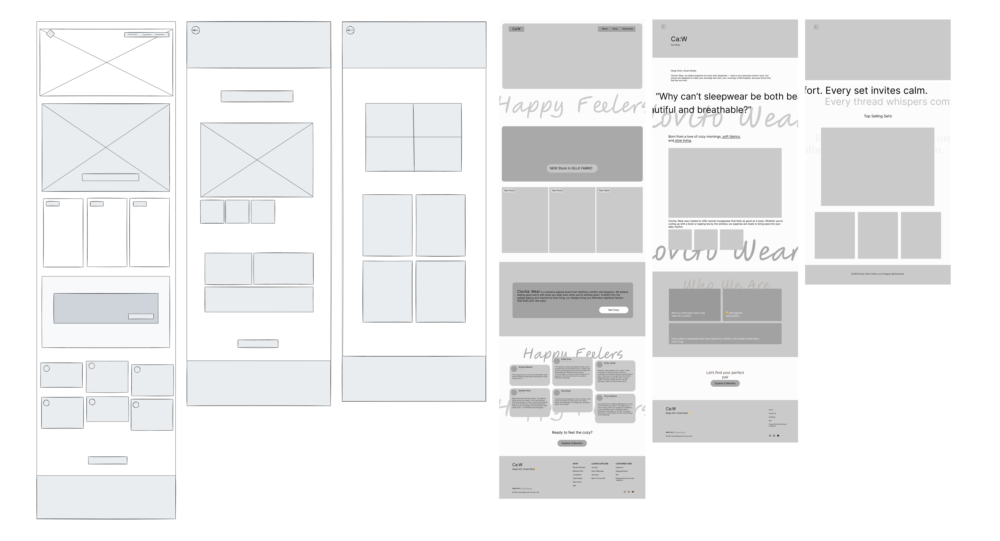

UI Design
The final UI uses minimal typography, clear iconography, and subtle color cues to improve glance-based usability.

A minimalist wearable interface concept designed to present essential health insights clearly on small screens.
Most wearable devices overload users with dense data, making it difficult to quickly understand health information during daily use.
To design a clean and intuitive wearable UI that allows users to monitor key health metrics effortlessly at a glance.
• Health-conscious individuals
• Users who prefer minimal, distraction-free interfaces
The process focused on prioritizing essential data, reducing visual clutter, and ensuring readability on small wearable screens.
Low-fidelity wireframes were created to explore layout density, information hierarchy, and interaction patterns suitable for wearable devices.

Wireframes (Home, Metrics, Detail)"
| Aspect | Before | After Clovita |
|---|---|---|
| Readability | Low | High |
| Cognitive Load | High | Reduced |
| Usability | Confusing | Intuitive |
The final UI uses minimal typography, clear iconography, and subtle color cues to improve glance-based usability.
Clovita Wear demonstrates how thoughtful UI decisions can improve usability and clarity in wearable experiences.